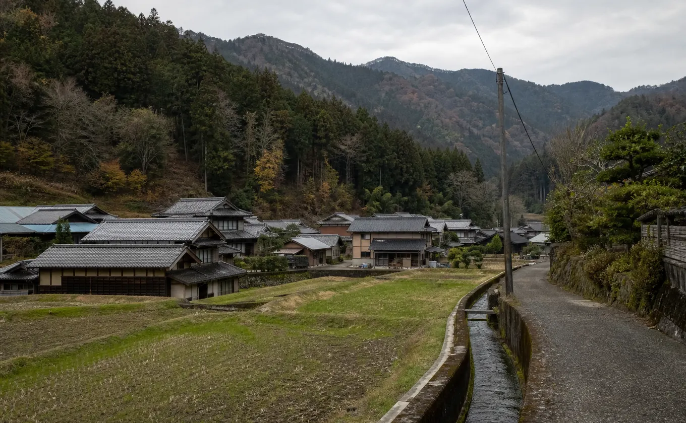

はじまり
熾（おき）は、薪が燃えたあとに残る
しずかな赤い火のことです。
炎は立たないのに、手をかざすといつまでもあたたかい。訪れた人が帰り道でもまだぽかぽかしている、そんな場所にしたくて、この名前をつけました。
蕗原の農家が空き家になったのは、2010年代の終わりごろでした。屋根は傷み、土間には農具が積まれたまま。それでも梁は太く、囲炉裏の灰はきれいに残っていました。
集落の大工さんに手伝ってもらい、二年かけて母屋を直し、裏の物置をサウナ小屋に建て替えました。熾をひらいたのは2022年の春です。
